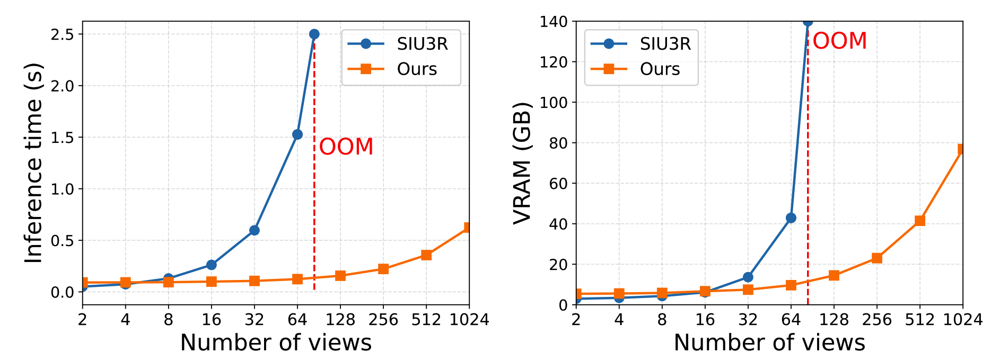
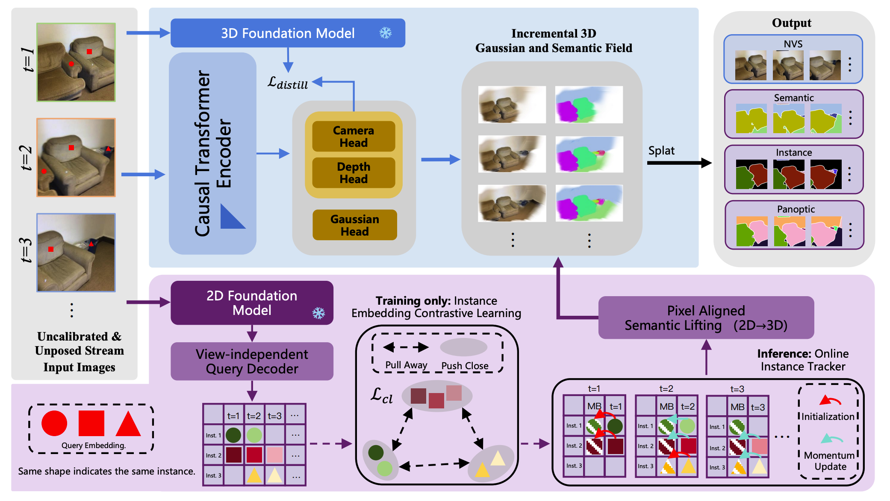
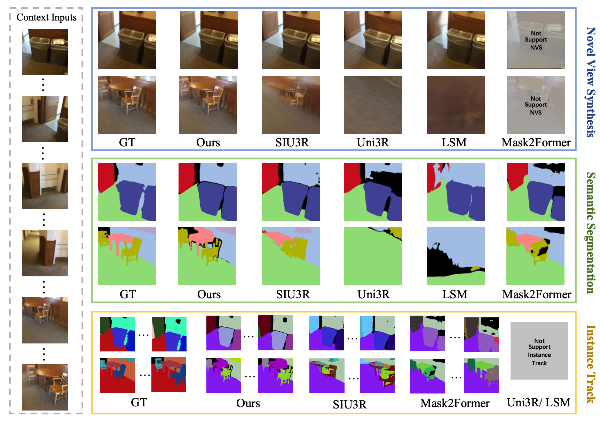

Most existing approaches remain offline-global in the sense that, as new frames arrive, they repeatedly recompute cross-frame interactions over the growing history. While effective for short sequences, this paradigm scales poorly: both runtime and memory typically grow rapidly with the number of views, hindering long-horizon online scenarios. As shown in Figure 1, even on an H200 GPU equipped with 140 GB of VRAM, SIU3R (Xu et al., 2025) still encounters an out-ofmemory (OOM) after processing approximately 80 frames, exposing a fundamental limitation of current joint modeling paradigms under long input streams. This phenomenon indicates that, for long-running online systems, there is an urgent need for an incremental modeling approach that does not require repeatedly reprocessing historical frames.

Overview of S2GS. S2GS processes an uncalibrated and unposed RGB image stream in a strictly causal manner. A causal Transformer encoder, guided by geometric priors from a 3D foundation model, predicts camera parameters, depth, and Gaussian attributes to incrementally construct 3D Gaussian representation. A decoupled semantic stream leverages a 2D foundation model and a query-driven decoder to produce per-view semantic and instance predictions. Query-level contrastive learning and an online instance memory bank (MB) stabilize instance identities over time. Semantic confidence is lifted to the 3D Gaussian field and decoded via splatting, enabling unified novel view synthesis, semantic segmentation, instance segmentation, and panoptic segmentation without revisiting past frames.

Novel View Synthesis / Semantic Segmentation / Instance Tracking.

@misc{zhang2026s2gsstreamingsemanticgaussian,
title={S2GS: Streaming Semantic Gaussian Splatting for Online Scene Understanding and Reconstruction},
author={Renhe Zhang and Yuyang Tan and Jingyu Gong and Zhizhong Zhang and Lizhuang Ma and Yuan Xie and Xin Tan},
year={2026},
eprint={2603.14232},
archivePrefix={arXiv},
primaryClass={cs.CV},
url={https://arxiv.org/abs/2603.14232},
}